- ホーム
- 2 Teams無料版のセットアップ
- 2.1 管理者のセットアップ
2.1管理者のセットアップ
・重要
ここで説明するのは、組織内で初めてTeamsをインストールする管理者の手順です。
管理者から招待を受けてTeamsに参加するユーザーは、「ユーザーのセットアップ」を参照してください。
1.お使いのブラウザから、以下のMicrosoft Teamsのページにアクセスします。
https://www.microsoft.com/ja-jp/microsoft-365/microsoft-teams/group-chat-software
2.［無料でサインアップ］をクリックします。
|
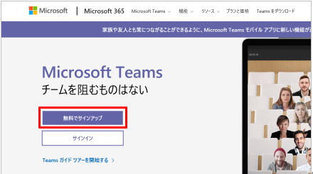 |
3.会社のメールアドレスを入力して、［次へ］をクリックします。
|
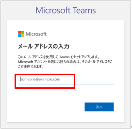 |
4.［仕事と組織向け］を選択して、［次へ］をクリックします。
|
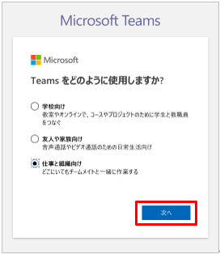 |
会社のメールアドレスでMicrosoftアカウントを取得していない場合は、新しいアカウントを作成する画面が表示されます。
すでにMicrosoftアカウントを取得している場合は、手順8. に進んでください。
5.［アカウントの作成］をクリックします。
|
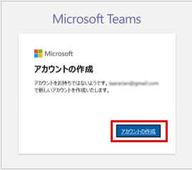 |
6.Microsoftアカウント用のパスワードを入力して、［次へ］をクリックします。
|
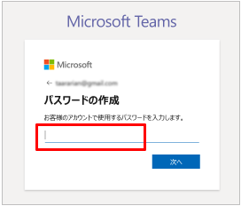 |
会社メールアドレスに、Microsoftアカウントチームから4桁（半角）のセキュリティコードが送信されます。
7.メールで受信した4桁（半角）のコードを入力して、［次へ］をクリックします。
|
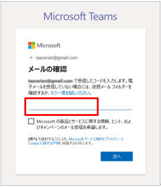 |
アカウントの作成画面が表示されます。しばらくお待ちください。
続いて、パスワードの入力画面が表示されます。
8.パスワードを入力して、［サインイン］をクリックします。
|
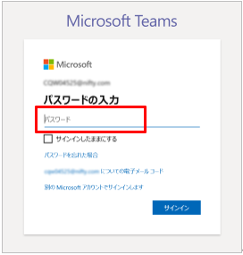 |
その他の詳細事項を入力する画面が表示されます。
9.性、名、会社名を入力して、［Teamsのセットアップ］をクリックします。
・重要
ここで入力した「会社名」は、Teamsの「組織名」になります。
|
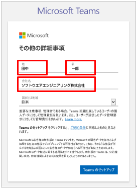 |
Teamsセットアップ中の画面が表示されます。しばらくお待ちください。
続いて、アプリの取得画面が表示されます。
10.［Teamsアプリを取得する］をクリックします。
|
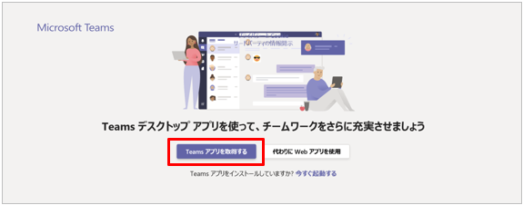 |
11.画面の下部に確認メッセージが表示されたら、［実行］をクリックします。
|
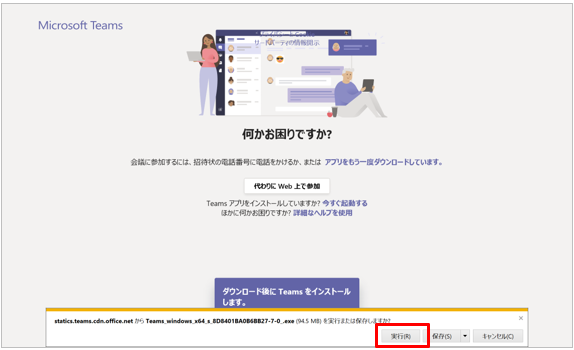 |
インストール中の画面が表示されます。しばらくお待ちください。
続いて、アカウントの入力画面が表示されます。
12.会社のメールアドレスを入力して、［サインイン］をクリックします。
|
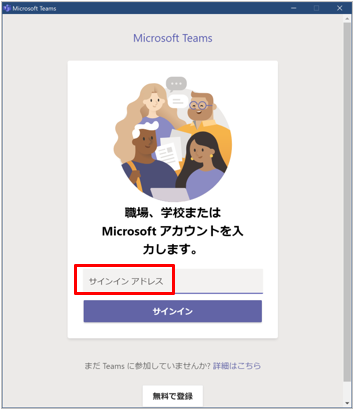 |
13.パスワードを入力して、［サインイン］をクリックします。
|
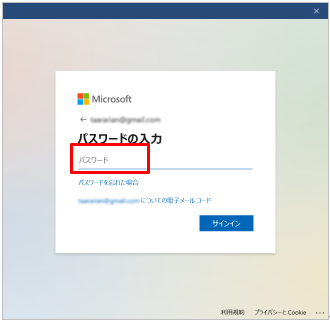 |
インストールが完了しました。
続いて、［Teamsへようこそ！］画面が表示されます。
14.［続行］をクリックします。
|
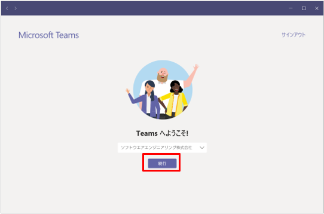 |
ユーザーをTeamsに招待する画面が表示されます。
15.［リンクをコピー］をクリックして、画面を閉じます。
|
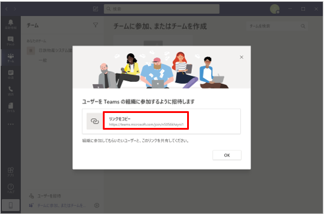 |
クリップボードに、ユーザーをTeamsに招待するためのURLが保存されます。
・参考
ユーザーの招待は後で行うこともできます。ここでは、招待されたユーザーのセットアップ操作と連携して、最初に説明します。